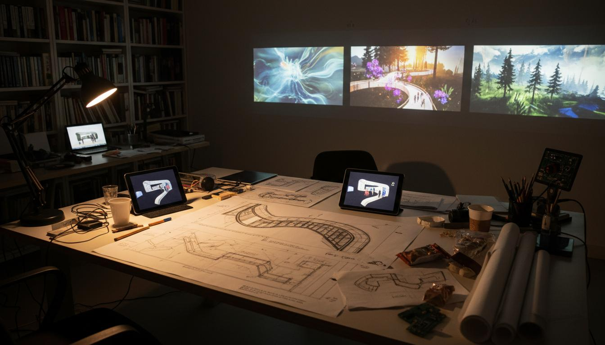
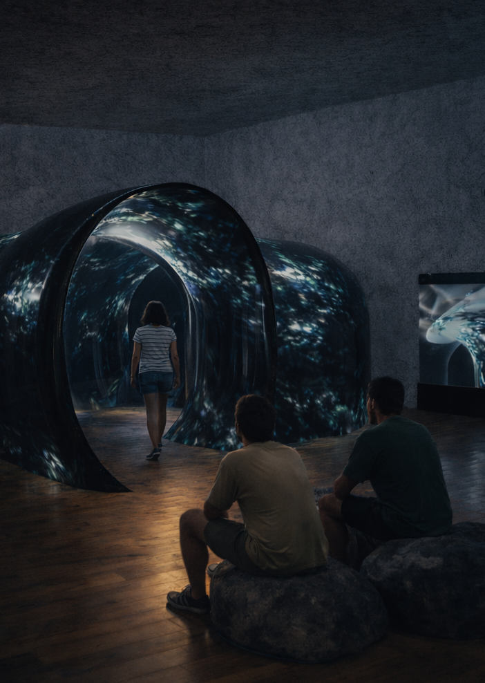
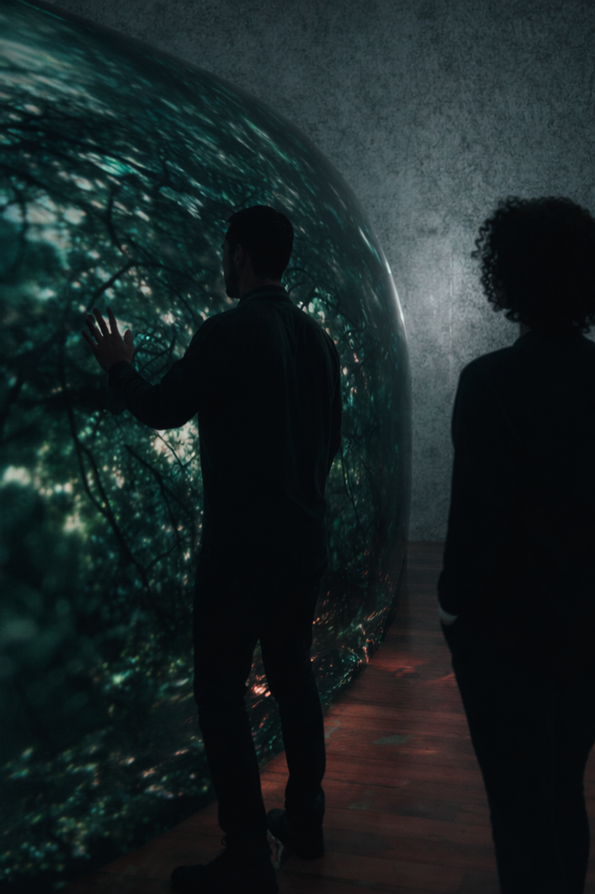
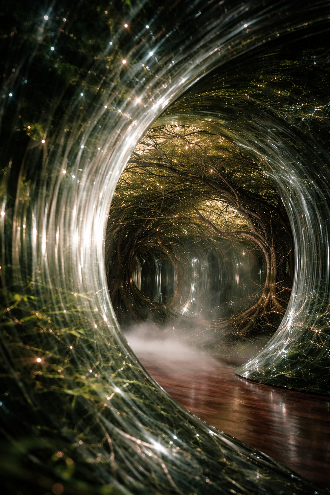
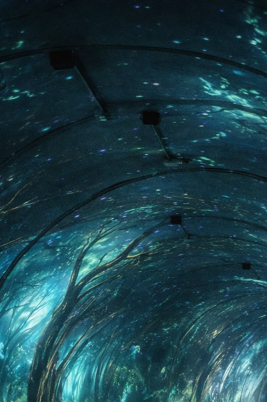
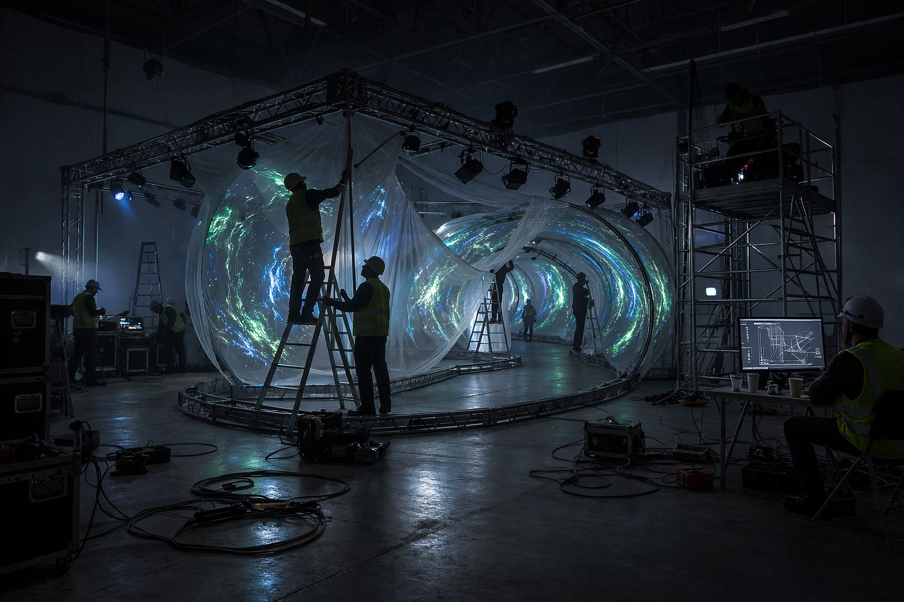
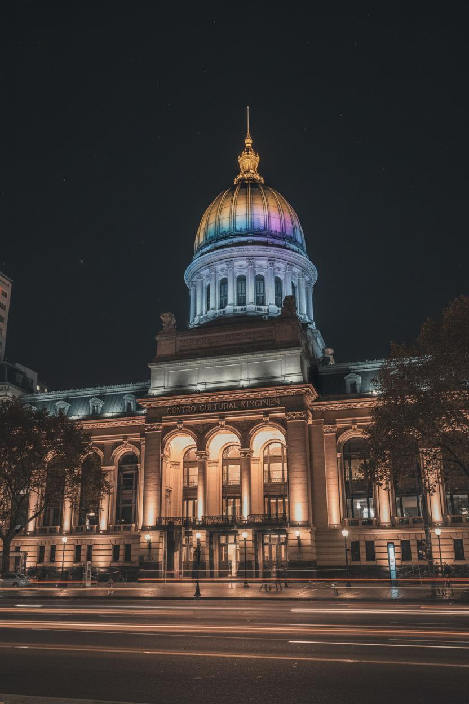

El proceso creativo detrás de ECOS
Desde los primeros bocetos hasta la instalación final: cómo se construyó un viaje sensorial que conecta al ser humano con la naturaleza.
Leer Más →
Viaje Sensorial
Instalación Inmersiva | Sonido | Naturaleza


Ecos: Viaje sensorial, es una instalación inmersiva sonora que lleva a los espectadores a transitar por un pasillo serpenteante semi oscuro que se irá iluminando por retroproyecciones a medida que avanzan. Susurros del viento entre los árboles, ríos y cascadas, aves: cada sonido invita a una conexión íntima con un entorno natural, despertando los sentidos y la imaginación.
La composición de la obra fue creada en código e imágenes paisajes naturales tomadas por el autor, quien estuvo a cargo de cada uno de los detalles de estainstalación.


La instalación combina diversos medios para crear una experiencia única.
Tres proyectores de 6500 lúmenes generan retroproyecciones inmersivas sobre las paredes y techo del túnel serpenteante.

Diez parlantes distribuidos estratégicamente crean un paisaje sonoro tridimensional que responde al movimiento.

Sensores de proximidad detectan la presencia de los visitantes, activando visuales y sonidos de manera única.

Touch Designer y Resolume Arena procesan las visuales, mientras Reaper y Pure Data gestionan el audio interactivo.

El recorrido completo tiene una duración aproximada de 15 a 20 minutos, aunque cada visitante puede transitarlo a su propio ritmo.
La instalación está dirigida al público en general sin restricción de edad, aunque el target ideal es público joven adulto mayor de 16 años.
El espacio del CCK cuenta con accesibilidad completa. El recorrido serpenteante está diseñado para ser transitado cómodamente.
Sí, la instalación permite la entrada de grupos pequeños para compartir la experiencia, aunque cada visitante vivirá un recorrido único según su movimiento.
Fue como caminar por un bosque real. Los sonidos, las luces... por un momento olvidé que estaba en el centro de la ciudad.
Como estudiante de arte, me fascinó ver cómo la tecnología puede crear emociones tan profundas. Una obra maestra de la instalación multimedia.
Una experiencia meditativa que me hizo reflexionar sobre nuestra conexión con la naturaleza. Salí renovada.
Reflexiones sobre el proceso creativo y la obra.

Desde los primeros bocetos hasta la instalación final: cómo se construyó un viaje sensorial que conecta al ser humano con la naturaleza.
Leer Más →
Un vistazo detrás de escena del montaje de la instalación en el Centro Cultural Kirchner.
Leer Más →Vive la experiencia en el Centro Cultural Kirchner.
Tip: abrí “Cómo llegar” para rutas en tiempo real según tu ubicación.
